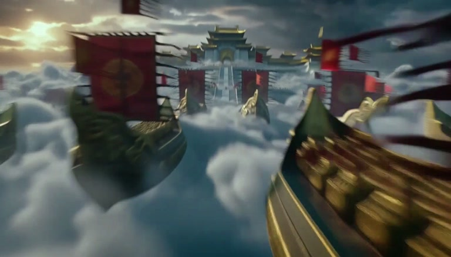
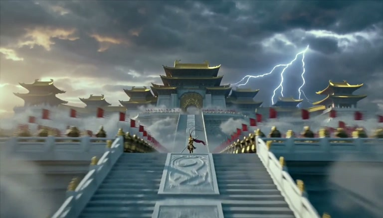
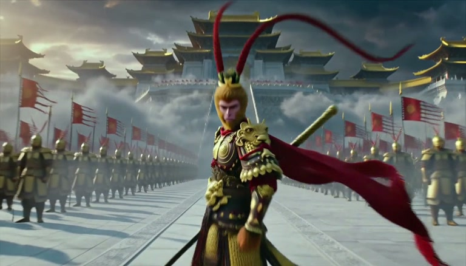
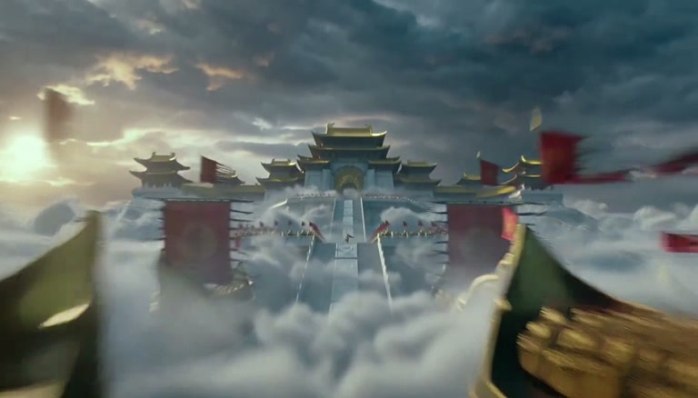
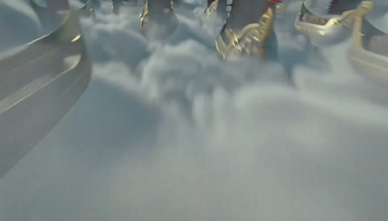

TEST CASE
pass
celestial-armada-establishing
generated/shot-01-celestial-armada-768p.mp4
PromptA live-action IMAX-scale aerial shot races through clouds over hundreds of bronze celestial warships and endless heavenly soldiers toward the South Heavenly Gate, where Sun Wukong stands alone.
| Status | Check | Observed | Expected |
|---|---|---|---|
| pass | decodeVideo stream is readable | — |
— |
| pass | durationduration is within range | 5.16667s |
{'min': 5.0, 'max': 5.5} |
| pass | resolutionResolution meets minimum | 1344x768 |
{'min_width': 1200, 'min_height': 680} |
| pass | fpsfps is within range | 24 |
{'min': 23.9} |
| pass | codecCodec is allowed | h264 |
['h264'] |
| pass | black framesNo excessive black frames detected | {'seconds': 0, 'ratio': 0.0, 'events': 0} |
{'max_total_ratio': 0.02} |
| pass | freezesNo excessive freezes detected | {'seconds': 0, 'ratio': 0.0, 'events': 0} |
{'max_total_ratio': 0.05} |
| pass | semantic:celestial-armadaA monumental celestial force is clearly visible, though the claimed quantity of hundreds of warships is not established.    |
{'score': 0.84} |
{'min_score': 0.78}OpenAI Codex visual QA judge · Frames show multiple large bronze-toned flying warships, long formations of armored soldiers, and numerous red war banners around a vast elevated palace approach. The force reads as large and organized, but only several distinct warships and dozens of individually readable soldiers are visible in these samples; “hundreds” and “endless” cannot be verified literally. · evaluator=OpenAI Codex visual QA judge · judge_prompt_hash=unavailable · model=gpt-5 · revision=2026-09-01 · sampling_policy=Five supplied frames sampled at approximately 1.03-second intervals across a 5.17-second video; visible evidence only. · vidspec_sampling=5 evenly spaced center frames |
| pass | semantic:south-heavenly-gateA colossal traditional Chinese gate and palace complex clearly dominates the camera's destination.  |
{'score': 0.94} |
{'min_score': 0.8}OpenAI Codex visual QA judge · A multi-tiered complex with sweeping golden roofs, monumental stairs, and a large central decorated gateway remains centered while becoming progressively larger from frames 2 through 5. Its specific name as the South Heavenly Gate is not visibly written or otherwise verifiable, but the requested architectural destination is strongly supported. · evaluator=OpenAI Codex visual QA judge · judge_prompt_hash=unavailable · model=gpt-5 · revision=2026-09-01 · sampling_policy=Five supplied frames sampled at approximately 1.03-second intervals across a 5.17-second video; visible evidence only. · vidspec_sampling=5 evenly spaced center frames |
| pass | semantic:lone-wukongOne isolated armored monkey-like warrior with a crimson cape and staff is visibly staged on the central approach. |
{'score': 0.88} |
{'min_score': 0.72}OpenAI Codex visual QA judge · Frame 4 shows a single figure isolated on the white stone stair axis between opposing formations. Frame 5 clearly reveals simian facial features, ornate armor, a flowing crimson cape, and a long staff carried behind the shoulder. The sampled stills do not establish with complete certainty that the figure is facing the army, and the identity Sun Wukong cannot be inferred beyond the visible monkey-warrior design. · evaluator=OpenAI Codex visual QA judge · judge_prompt_hash=unavailable · model=gpt-5 · revision=2026-09-01 · sampling_policy=Five supplied frames sampled at approximately 1.03-second intervals across a 5.17-second video; visible evidence only. · vidspec_sampling=5 evenly spaced center frames |
| pass | semantic:scale-and-depthForeground, middle ground, and deep background remain distinctly readable at blockbuster scale. |
{'score': 0.93} |
{'min_score': 0.78}OpenAI Codex visual QA judge · The sequence presents clouds and ship hulls in the foreground, banners and troop formations in the middle ground, and a vast palace complex in the background. Successive samples visibly close distance toward the centered gate and warrior, supporting a forward camera move. Motion blur and dense cloud cover soften some early detail, especially in frame 1, but do not collapse the scene into undifferentiated particles. · evaluator=OpenAI Codex visual QA judge · judge_prompt_hash=unavailable · model=gpt-5 · revision=2026-09-01 · sampling_policy=Five supplied frames sampled at approximately 1.03-second intervals across a 5.17-second video; visible evidence only. · vidspec_sampling=5 evenly spaced center frames |
| pass | semantic:no-unwanted-textNo unwanted text or graphic overlay is visible.  |
{'score': 1.0} |
{'min_score': 0.95}OpenAI Codex visual QA judge · Across all five supplied frames, no subtitle, caption, logo, watermark, interface element, or malformed text is visible. · evaluator=OpenAI Codex visual QA judge · judge_prompt_hash=unavailable · model=gpt-5 · revision=2026-09-01 · sampling_policy=Five supplied frames sampled at approximately 1.03-second intervals across a 5.17-second video; visible evidence only. · vidspec_sampling=5 evenly spaced center frames |